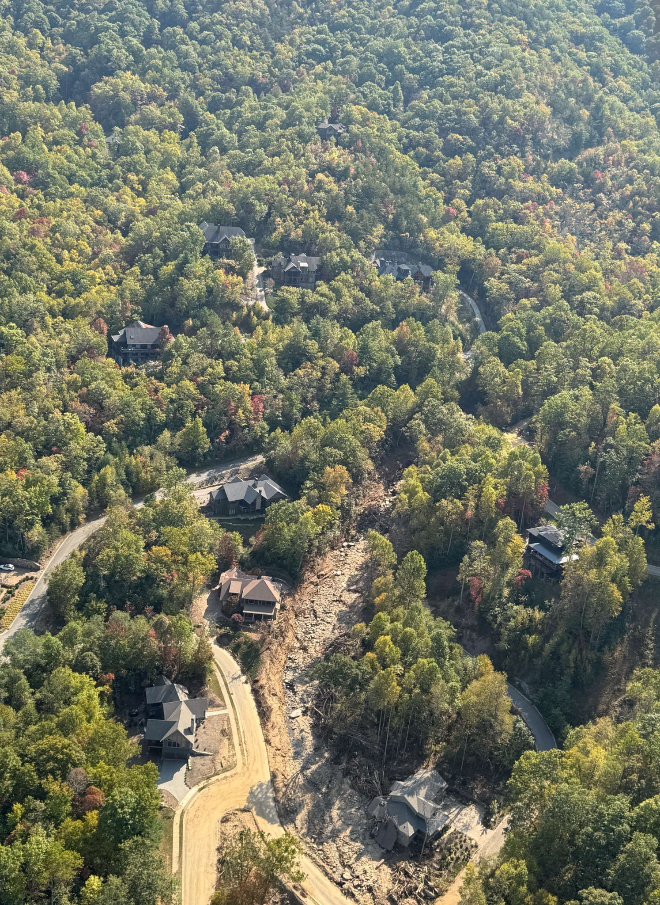
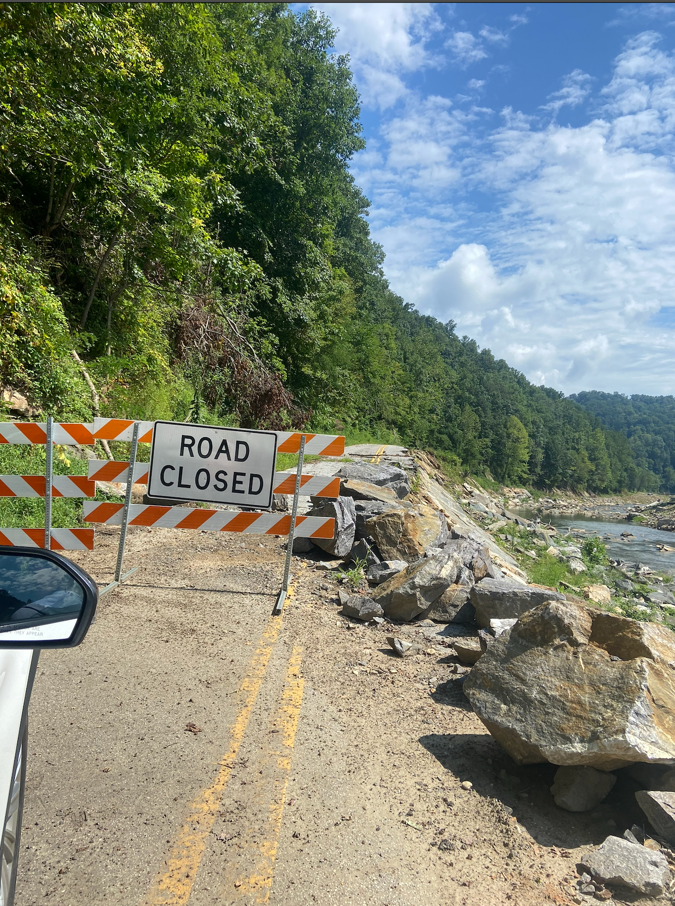
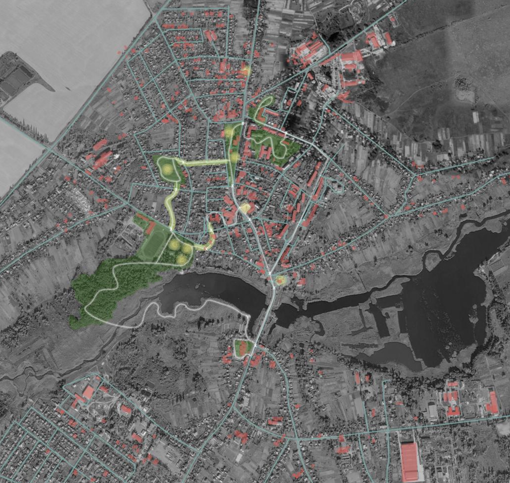
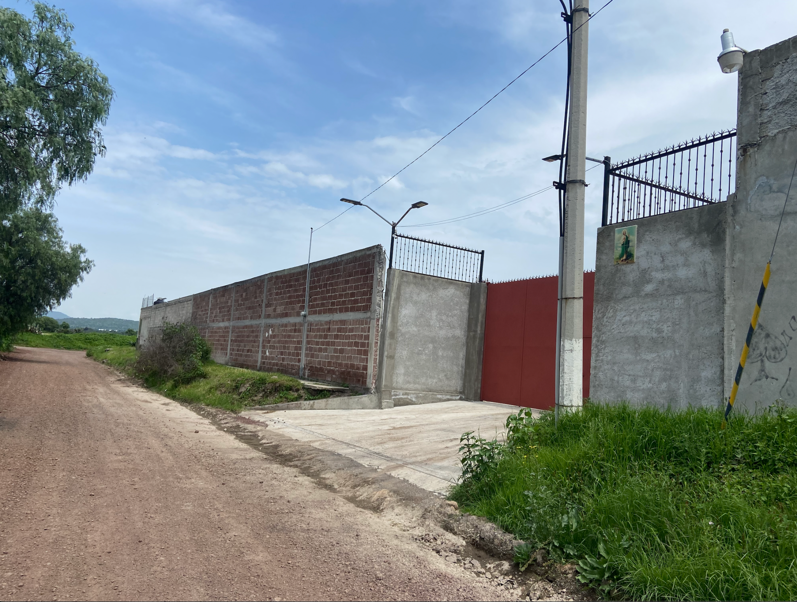
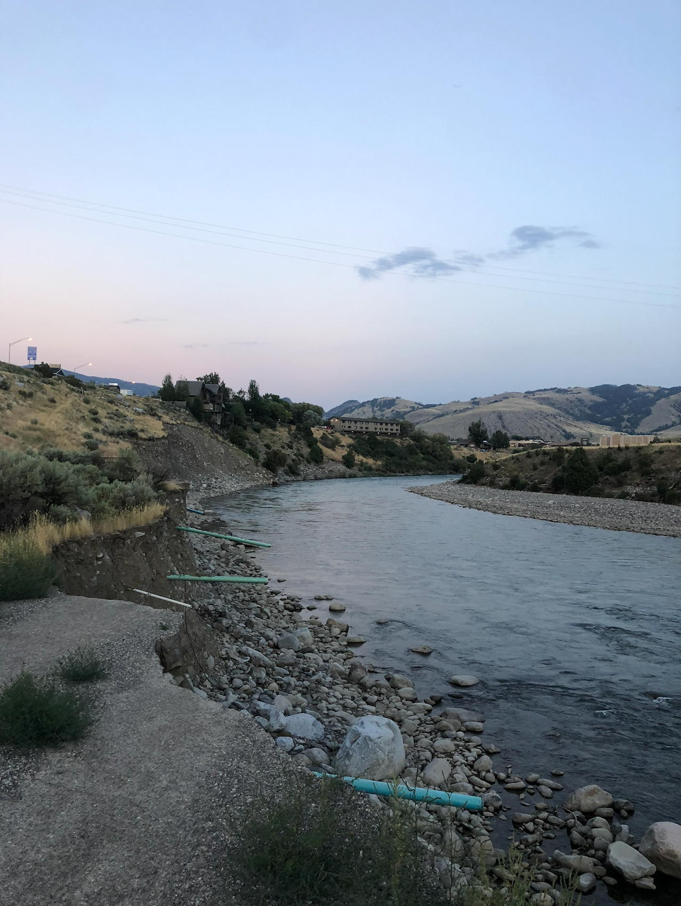

Resilience Strategy
Understand the landscape, community priorities, existing plans, risks, and systems shaping a place.
RESILIENCE / DESIGN / IMPLEMENTATION
Petrichor Strategies helps communities turn resilience goals, local knowledge, and existing plans into practical projects that prepare places for a changing climate.

01 / WHY PETRICHOR
Communities already hold enormous knowledge—in residents, staff, plans, infrastructure, landscapes, and lived experience.
Petrichor brings those pieces together and turns them into practical pathways toward implementation.
02 / WHAT WE DO
We begin by understanding how a place actually works—its landscape, infrastructure, communities, institutions, risks, and existing plans.
That broader view helps identify the most useful next step: education, design, funding, coordination, or a physical project. The same answer does not fit every place.
INFORMED BY URBAN POLITICAL ECOLOGY / PLACE-BASED SYSTEMS THINKING
Understand the landscape, community priorities, existing plans, risks, and systems shaping a place.
Translate local needs and knowledge into physical strategies, project concepts, and actionable next steps.
Use spatial data to reveal relationships, vulnerabilities, patterns, and opportunities.
Connect priorities to grants, partners, programs, phasing, and practical pathways forward.
Help communities understand what happened, what is needed, and what can come next.
03 / HOW WE THINK
Who is this for? Local knowledge, lived experience, institutions, vulnerability, and capacity.
What can work here? Landscape, infrastructure, development patterns, hazards, and physical systems.
What has the community already committed to? Plans, regulations, priorities, and requirements.
Where systems are not connecting yet.
Projects, design strategies, funding pathways, partnerships, and next steps.
04 / SELECTED EXPERIENCE
Petrichor is built on experience across disaster recovery, reconstruction, urban morphology, community planning, mapping, and implementation. The work below reflects founder experience prior to and alongside the practice.

DISASTER RECOVERY / WESTERN NORTH CAROLINA
Field-based research across Western North Carolina examining local-first recovery, logistics, unmet needs, and the systems shaping long-term resilience.

RECOVERY + URBAN DESIGN / MAKARIV, UKRAINE
Reconstruction planning, stakeholder analysis, mapping, and recovery frameworks supporting a place-based vision for Makariv.

URBAN MORPHOLOGY / HIDALGO, MEXICO
Field observation and measurement of housing, development patterns, streets, setbacks, infrastructure, and urban form in Pachuca and Tizayuca.

FEMA / INTERAGENCY RECOVERY COORDINATION
Community planning and interagency recovery coordination following federally declared disasters, including the 2022 Montana severe storms and flooding mission.
CASE STUDIES / PROJECT PAGES COMING NEXT
05 / ABOUT
Petrichor Strategies is a resilience consultancy and design practice founded by Sawyer McCarley.
The practice connects planning, design, funding, infrastructure, public policy, and lived experience—helping communities understand the larger system and build a clearer path from intention to implementation.
“Extreme weather can expose weaknesses that communities have lived with for years. Recovery gives us an opportunity—not simply to rebuild, but to address those weaknesses and create stronger, more resilient places.”
Extreme weather is part of the reality communities must prepare for. Recovery should not only rebuild what was there before; it can address longstanding weaknesses in infrastructure and systems and make places stronger for what comes next.
06 / CONTACT
Have a resilience goal, recovery challenge, or community priority that needs a path toward implementation? Let’s talk about what comes next.
START A CONVERSATION →